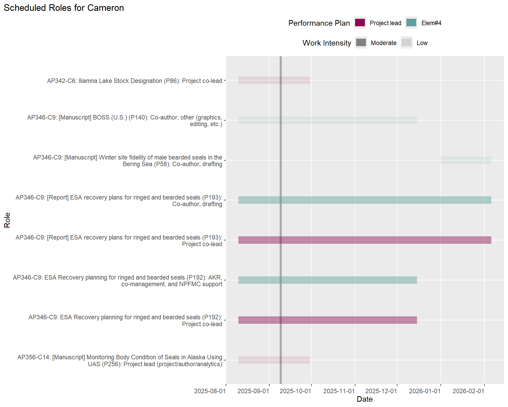
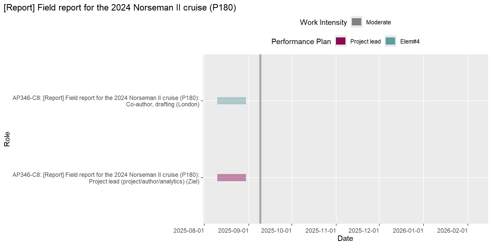
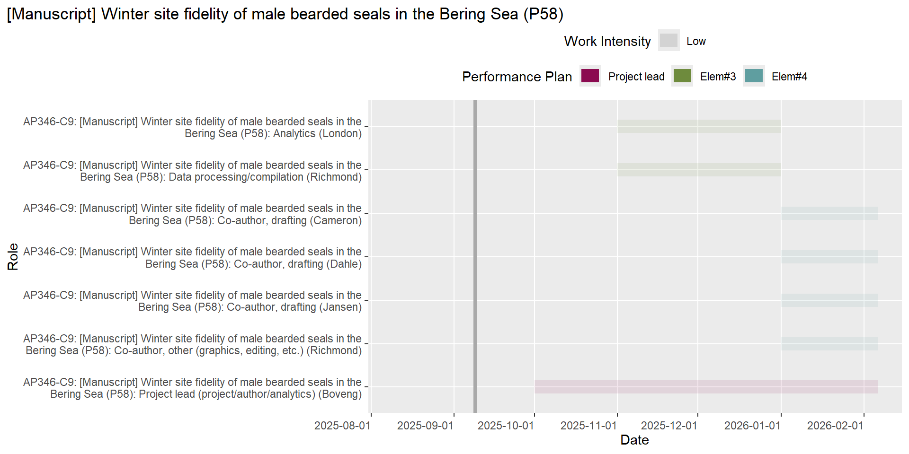
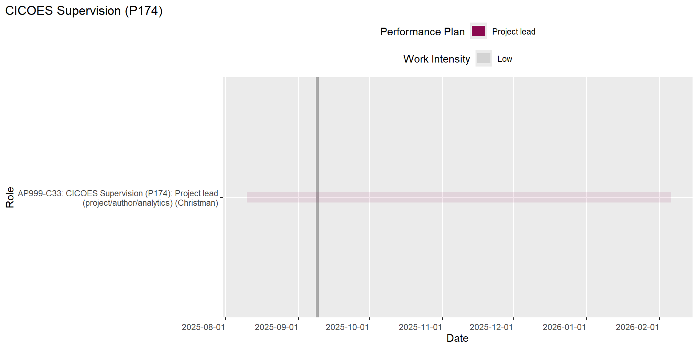

| Activity Plan | Action | Lead | Planned End Date |
|---|---|---|---|
| Ice seals | CHESS paper submitted | Boveng | 2023-03-01 |
| Ice seals | draft manuscript text | Boveng | 2023-03-31 |
| Ice seals | U.S. BOSS paper submitted | Boveng | 2023-04-01 |
| Ice seals | Draft ms to co-authors; comments & edits returned | Boveng | 2023-05-17 |
| Ice seals | Revise, ms; submit to RPTS | Boveng | 2023-06-15 |
| Trophic roles | Grant funding to ADF&G; FY23 funds | Boveng | 2023-06-30 |
| Ice seals | Revise and resubmit U.S. BOSS & CHESS manuscripts | Boveng | 2023-07-15 |
| Ice seals | Submit to journal | Boveng | 2023-07-31 |
| Ice seals | CKMR paper submitted | Conn | 2023-03-01 |
| Toolbox | Develop and test theoretical modeling framework | Conn | 2023-03-31 |
| Ice seals | Russian BOSS paper submitted | Conn | 2023-05-01 |
| Ice seals | JoBSS abundance analysis | Conn | 2023-05-31 |
| Harbor seals | Initiate study - Tracking Pup Growth and Productivity of Glacial Harbor Seals | Jansen | 2023-09-30 |
| Ice seals | Develop folder structure and instructions for accessing imagery for review | Koslovsky | 2023-06-30 |
| Harbor seals | Integrate code for calculating estimates and confidence intervals | Koslovsky | 2023-06-30 |
| Harbor seals | Deploy application to NMFS RStudio::Connect server | Koslovsky | 2023-08-30 |
| Ice seals | Development of a better approach for storing/handling data from outside partners | Koslovsky | 2023-08-31 |
| Ice seals | Implement systematic QA/QC of telemetry data | Koslovsky | 2023-08-31 |
| Ice seals | Archive results | Koslovsky | 2023-09-30 |
| USPAI | Collect thermal/color imagery and INS data from payload and survey test flights | Koslovsky | 2023-09-30 |
| Ice seals | Revise ringed seal haul-out ms and share with co-authors (round 1) | Lindsay | 2023-11-22 |
| Ice seals | Develop analytical framework | London | 2023-02-01 |
| Ice seals | 'Haul-out behavior and aerial survey detectability ...' manuscript published | London | 2023-02-15 |
| Ice seals | Establish collaborative framework (e.g. Github repo) | London | 2023-03-01 |
| Trophic roles | Apportion SS energy intake across space & time | London | 2023-03-31 |
| Ice seals | Data assembly | London | 2023-05-30 |
| Ice seals | Draft analysis & share results | London | 2023-07-01 |
| Ice seals | Draft manuscript | London | 2023-09-01 |
| Trophic roles | Spotted, bearded, ringed seal case studies complete | London | 2023-09-30 |
| Ice seals | species misclassificaiton including AI model output | McClintock | 2023-03-31 |
| Harbor seals | Explore alternative approaches for assessment and long-term monitoring | McClintock | 2023-11-17 |
| Ice seals | Community feedback | Moreland | 2023-02-28 |
| Ice seals | Aircraft identified and mount development underway | Moreland | 2023-09-01 |
| Ice seals | [Manuscript] Remote sensing of polar bears using aerial multispectral imagery | Moreland | 2023-09-30 |
| Ice seals | Correlation between substrate-bear and environmental data | Moreland | 2023-09-30 |
| Ice seals | AI Model Expanded to ribbon and spotted | Moreland | 2023-10-30 |
| Harbor seals | Submit journal article and deposit pre-print | VerHoef | 2023-04-15 |
| Harbor seals | Calculate estimates of abundance and trend by stock | VerHoef | 2023-05-15 |
| Harbor seals | Journal article published | VerHoef | 2023-09-30 |
| Harbor seals | Knowledge transfer re: current assessment framework and statistical model | VerHoef | 2023-11-17 |
| Harbor seals | Document package/R functions and write vignette(s) | VerHoef | 2023-11-17 |
| Ice seals | Review analyses in the draft; update if needed | Ziel | 2023-05-31 |
PEP Scheduling
This report was generated on 2023-11-28.
Introduction
The information in this report represents the outstanding and upcoming work for PEP staff over the next 180 days. The intent of this information is to help support cross-project planning and communication.
Overdue Work
The following table lists the actions that are overdue in the DB.
Planned Work by Action Lead
NOTE: For actions where there is no start date assigned, an anticipated start date of 60 days before the planned end date has been estimated.





[1] "Diet and physiology"
[1] "Collaborate with partners on analyses of samples collected in the field"


[1] "Harbor seals"
[1] "Abundance and trend analysis for harbor seal stocks"


[1] "Aerial surveys of harbor seals in Alaska"


[1] "Aleutian Islands harbor seal ecology"

[1] "Harbor seal reporting"


[1] "Scientific assessment and support to stakeholders for management and co-management of Alaskan harbor seals"


[1] "Vessel disturbance of glacial harbor seals"

[1] "Ice seals"
[1] "Aerial surveys of ice seals and polar bears"


[1] "Scientific assessment and support to stakeholders for management and co-management of Alaskan ice seals"




[1] "Vessel-based tagging and sampling for haul-out, health, condition, diet"

[1] "Other"
[1] "Optics Strategic Initiative"

[1] "Program data management"



[1] "Walcott work for AEP"[1] "Toolbox"
[1] "Integrating diverse data sources to determine seasonal density distributions of protected species"


[1] "Trophic roles"
[1] "Analysis for Trophic Roles of Ice Seals RWP project"
[1] "UAS body condition"
[1] "Phase III: UAS field tests/data collection and analysis/reporting"


[1] "USPAI"
[1] "Uncrewed Surveys of Pinnipeds in the Aleutian Islands"